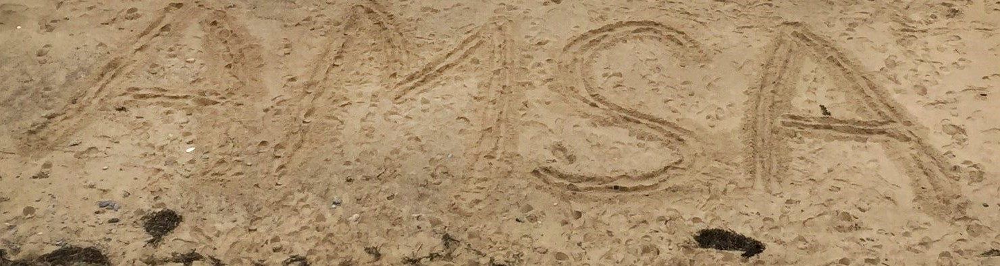
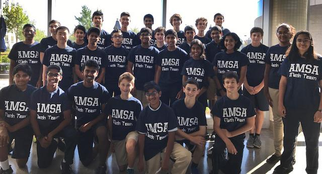

Piano
I have taken piano lessons since the age of 5 with Nune Hakobyan. She gives me classical piano music from various composers, and I have played with other instruments and with a quartet. Piano has helped me grow as an individual and is also a good way to relieve stress.
The video on the right is from a piano concerto I played recently. More videos can be found on the same channel (my brother's youtube channel).
Theatre
Lucky 10 is a singing and theater group I was involved in for two years in middle school. We performed various songs from Jewish Musical Theater, as well as the opera The Wedding of Figaro, in which I played Count Almaviva, and the musical Annie, in which I played Oliver Warbucks. As well as acting, this program included voice lessons.
I was involved in many theatrical productions at Watertown Children’s Theatre (WCT) in elementary school. Though I stopped participating in WCT in middle school, I was involved in a production of the musical Assassins in 10th grade.
AMSA
This is a section for the activities at my sending school, the Advanced Math and Science Academy (AMSA). The picture above is from our 9th grade class trip to Cape Cod.
Math Team
I have been part of math team since 7th grade. In 9th and 10th grade, we participated in the Worcester County Mathematics League (WOCOMAL). In 9th grade, I was 10th individually and our team was #1 in Freshman WOCOMAL, while in Varsity WOCOMAL I was in the top 100 individually and our team placed first at the MAML state’s championship in the small school division. In 10th grade, our school competed in Varsity WOCOMAL again, and I placed 15th individually, while our team placed first again in WOCOMAL. I also participated in various other math competitions such as November HMMT and PUMaC (power round only).
In 10th grade, I was Vice President of Varsity Math Team. This role helped me develop my leadership qualities and helped me understand some of the many responsibilities of running a club. I also wrote problems for PDMT, a middle school competition run by students from MAMS and AMSA, and AMSA’s Gauss Day competition, a local competition at my sending school to inspire 6th and 7th graders to hone their math skills or join math team.
A Cappella
I was involved in the Photosymphonizers, AMSA’s A Cappella group in 9th and 10th grade, at my sending school. Our team participated in the International Competition for High School A Cappella (ICHSA). Though our team was not extremely competitive, the Photosymphonizers were a great community.